About
This is the Cube. The cube is a shape with 4 sides, all the same, we would say pretty consistent.
The cube is currently living in one of the coldest places of the world, so he has to protect himself with
the help of unnamed shapes. The humans call it beanie, scarf and socks. It does make him warmer, so we would say
it's a successful adaptation from this simple shape.
The Cube in his new home
Characteristics
- The Cube is a very social shape, tries his best to be the best cube among his shapes friends.
- The Cube comes from a very far away place, the mathematics dimension. This place exists in the conceptual world, where numbers can be shapes and all sort of things made all from numbers relations and imagination.
- He is one of the most popular shapes because he tends to be cool.
Friends
The cube usually hangs out with his favourite shapes: the circle and the triangle. All of them have very different shapes and functions, they are all made from different numbers relations, but in the end they all come to the same: having fun with eachother. Diversity is what makes them learn from eachother and together they are a great shape team.Above you can find their favourite songs.
